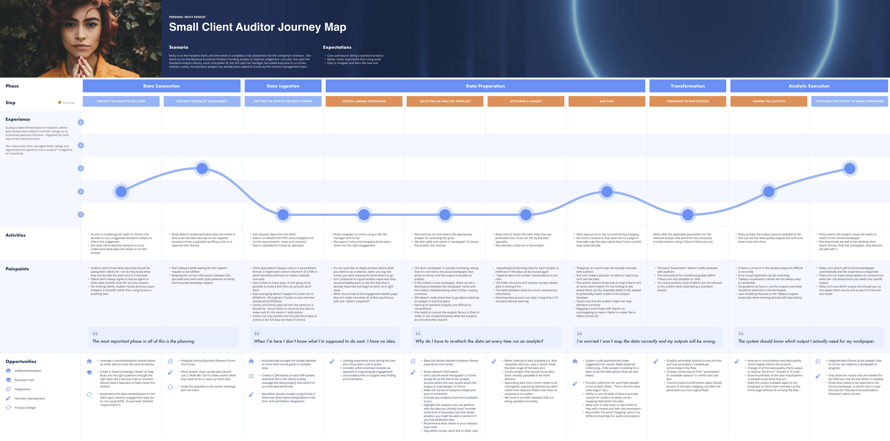

DELOITTE GLOBAL
Redesigning the future audit experience
Product Vision
Redesign
Design System

My Role
I led Design and conceptualization of Cortex, an internal audit application for Deloitte Global.
I worked closely with 6 product teams across US & India along with 3 designers (Konrad and Deloitte Digital) to build Cortex from the ground up. I led weekly design reviews with key stakeholders to define their product vision, visual identity and support the development process through to its launch in June 2022.
Project Overview
Deloitte Global provides audit & assurance, consulting, financial advisory, risk advisory, tax and related services to public and private clients across multiple industries. They needed help redefining the product vision for Cortex, an existing application for auditors.
We designed a simple-to-use internal web application that enables audit teams to run analytics and generate visualizations for their clients.
My Role
Experience Design Lead
Timeline
15 Months (March 2021 - June 2022)
Deliverables
Web Application, Design System
The Challenge
A modular application that enables transparency and collaboration between auditors, data specialists & content teams.

Auditors require a “self-service” tool where they can run analytics without help from a data specialist. In the current state, a majority of their workflow requires specialist intervention. The back and forth communication required with another team delays their ability to complete reports.

Data Specialists should be less involved in day-to-day requests from the audit team. They want to use Cortex for their own custom analytics.
Content Authors create and maintain analytic templates for the audit team to use. Currently, there is no standardization for template creation, making it difficult for auditors to find the templates they need.
Design Highlights
A few highlights from the new audit experience.
Streamlined Workflow Upon Login
Auditors are able to quickly start working on recent engagements without the added step of selecting a client each time.
Library of Analytic Templates & Visualizations
Empowers audit teams to select and run multiple analytics at a time.
Centralized Solution for Managing Data
Ability to upload data, send data requests and set up automated data extraction.
Research
At the start of the project, we participated in a 2-Day Design Thinking Session (DTS) to understand the current state of Cortex. After an extensive walkthrough, it was clear that we needed to work with a UX research team to gather feedback from Cortex users and establish our Design North Star.
User Interviews
In total, we interviewed 13 technology leaders, audit practitioners & data specialists to learn about their current process and pain points. We also had a walkthrough of 4 audit applications to understand how Cortex fits into an auditor’s day-to-day workflow.
We learned that:
- There was a positive outlook towards the future of Cortex
- Opportunity to make data acquisition more efficient
- We need two separate experiences for auditors and specialists, each with very different needs
- A new relaunch with improved features show help adoption and understanding
Heuristics Analysis
To understand whether Cortex is following predefined design principles (heuristics), we tested the "Create Standard Analytics" flow based on the following: funnel design, information design, interaction design, visual design, content & accessibility.
Personas
We synthesized results from our interviews and heuristics analysis to create personas for Small Client Auditor, Large Client Auditor and Data Specialist. Examples of Small Client Auditor and Data Specialist personas are shown below.
Journey Mapping
In order to create a personalized experience for Nicky, we needed to fully understand the breadth and depth of her work. To do so, we mapped our her experience while completing her daily activities to understand her process and pain points.

Our Design North Star
Cortex breaks up the analytic process into simple, approachable modules for novice users while providing advanced mechanics for more complex scenarios. The modular design helps guide independent users through a step-by-step process while enabling collaboration for teams on larger engagements.
Our Guiding Principles
Along with our North Star, we defined 3 design principles for the work ahead:
Modularity
Improve wayfinding, foster collaboration and expedite output generation by dissecting the analytic process into constituent parts.
Transparency
Enables users to know the impact of their decisions and how best to handle data to boost efficiency while reducing error.
Simplicity
Remove any excess actions and information that are not pertinent to the user, and reduce feelings of overload.
UX/UI Design
The design stream was divided into 2 phases with additional design resources from Deloitte Digital. In Phase 1, we laid the foundation for the high impact areas including; navigation, homepage and analytics. In Phase 2, we moved into data management and audit-specific tests. Each phase lasted 3 months. There were 2 weeks between Phases for testing and iterations.
Defining the Ideal Workflow
After prioritizing epics by their level of impact, I started working on a task flow to map out what the most ideal workflow would look like for an auditor. This required a lot of collaboration with the team and later served as a guide during the low fidelity phase.
Low Fidelity Wireframes
During the low fidelity phase, I created sketches and gray-scale components using the internal Omnia Design System. The product team was open to introducing new components specific to the needs of Cortex.
High Fidelity Designs
The design team worked on high fidelity designs as low fidelity wireframes were approved, creating a streamlined process. We established a unique color palette and UI patterns for Cortex while maintaining visual cohesiveness to the Omnia brand.
Evaluate
At the end of each Phase, the Deloitte Digital team tested designs with users. Results from user testing carried over to design as we continued to iterate.
Implementation
I worked closely with 6 Product teams to build Prism Design System for Cortex, establish internal processes and guide implementation processes. Before having a designated designer, the development teams were building from screenshots of components. I helped the team establish a scalable system for moving designs to development.
Introducing Prism Design System
Cortex is part of a suite of applications under the Omnia brand. At the time, Omnia’s Design System was not yet built for use. To meet the launch date for Cortex, we decided to create a hybrid design system using a combination of components from Omnia and new components introduced during the redesign. I took on this challenge by creating design system files in Figma to bridge the gap between development and the new redesign screens.
Addressing UI Inconsistencies Across Global teams
Cortex is part of a suite of applications under the Omnia brand. The purpose of the Omnia brand is to have one design system that encompasses the entire suite of applications. However, the Omnia design system is still in the process of being
Continuous Iteration
Towards the end of the project,
Learnings
This project helped me reach a significant milestone in my career.
This was my first time...
- Redesigning a complex application used globally by audit teams at Deloitte
- Working directly with VP at Konrad
- Fully integrated with the client team and processes
- Longest project (15 months)
Becoming the design expert
- I was the sole designer on Cortex for the first 6 months
- Working directly with senior managers, product owners and development teams
- Overseeing all areas of the product (engagement creation, analytics, data management, journal entry testing & more)
Growing the design team
- Onboarded 4 new designers from Canada, India, Colombia and Puerto Rico
- Developing internal processes - onboarding, design reviews, client demos, product walkthroughs, prioritization, effort and status tracking in Azure DevOps
- Mentorship - working closely with junior and intermediate designers, providing clarity & context while empowering the team to push designs forward
Next Steps
Since the relaunch of Cortex in June 2022, product teams are continuing to iterate on the next version of Cortex - layering in functionality and features to create a robust application for the future.